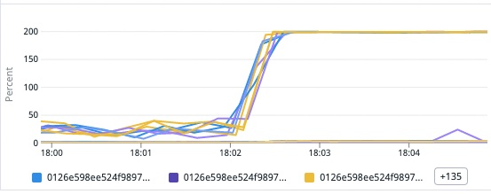
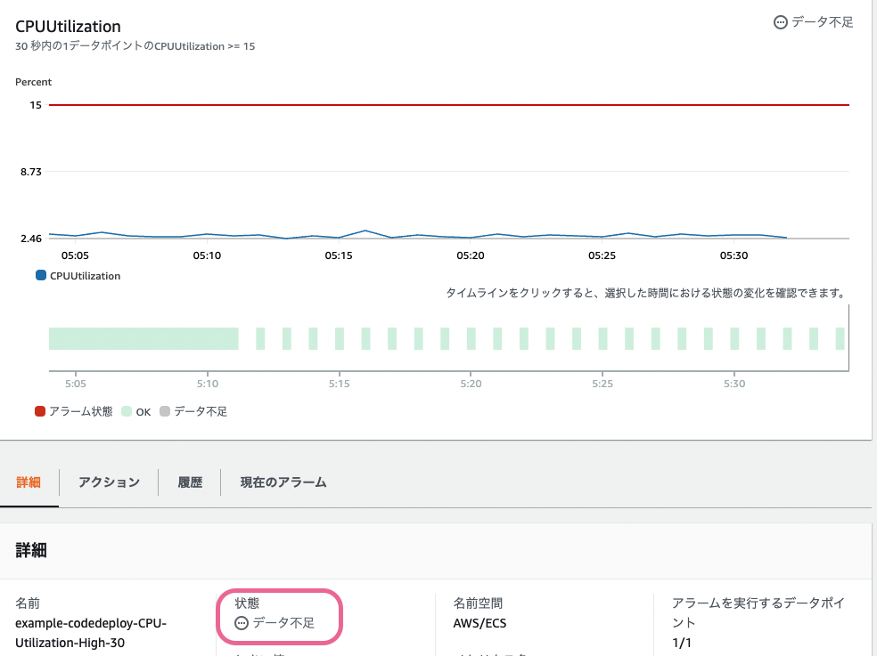

こんにちは @jedipunkz 🚀 です。
普段仕事で AWS ECS を使っていて Autoscallng Group によってアプリケーションを据えケールさせて運用していますが、運用している中でより高速にオートスケール出来ないものだろうか？と思うシチュエーションが何回か発生し、対応方法について模索していました。
実際に発生したシチュエーション
下記はコンテナ毎の CPU 使用率です。1分未満の間に急激にアクセスが増えコンテナの CPU 使用率が 100% に達し (実際には vCPU に基づいて 200% となっている)、ECS Service のヘルスチェックに Fail して、コンテナが落ち、新しいコンテナは起動するものの、アクセス不可に耐えられず、コンテナ停止と起動を繰り返すといった状況でした。

Autoscaling Policy, Cloudwatch Metrics Alarm の調整
まず最初に考えたのが下記の値の調整です。
- aws_app_autoscaling_policy の cooldown 値
- aws_cloudwatch_metric_alarm の period 値
具体的には 60sec となっていた値を 10sec などに変更しました。これによって 60sec のインターバルでしきい値計算してスケールさせていたところを 10sec にインターバルを縮めつつスケールさせる。つまりより迅速にスケールさせることで上記のシチュエーションに耐えられるのではと考えました。
ですが、結果は NG でした。
下記は Cloudwatch Metrics の様子です。データはプロットされているものの、データ不足 という状態に陥っている事がわかります。

実際に ECS はこの設定をした Metrics Alarm ではスケールしてくれませんでした。
高解像度メトリクスの利用について
であれば高解像度メトリクス を利用すれば良いのではと考えました。
歴史的に
- 2009年当初、5分間隔だった Cloudwatch Metrics
- 2010年に1分間隔に変更
という背景があるようなのですが、それに対して高解像度メトリクスは1秒の間隔でメトリクスを発行することが可能になるとのこと。
ただ ECS が Cloudwatch Alarm にメトリクス発行するのですが、AWS サポートに聞いたところ、ECS は高解像度メトリクスに対応していない、と回答いただきました。
サイドカーコンテナで動かす自前ツール ESP の利用で解決
ということで、自前のツールを Go で開発しました。これによって問題が解決すると考えています。(ただ、現時点ではまだ運用に乗せていません)
https://github.com/jedipunkz/esp
前提としては下記を考慮する必要があります
- 自前ツール ESP は対象となるアプリコンテナのサイドカーとして起動
ツール内で行っていることは下記です。
- (1) ESP は ECS メタデータエンドポイントにアクセスしてアプリコンテナの CPU 使用率を計算する上で必要な値を取得
- (2) ESP はアプリコンテナの CPU 使用率を計算
- (3) ESP は CPU 使用率を Cloudwatch Metrics へ高解像度メトリクスとして Put
結果、Terraform 等で下記のように設定すれば秒単位でスケールする ECS が構築できます。
resource "aws_cloudwatch_metric_alarm" "example_high" {
alarm_name = "example-CPU-Utilization-High-30"
comparison_operator = "GreaterThanOrEqualToThreshold"
evaluation_periods = "1"
metric_name = "CPUUtilization"
namespace = "<ESP 起動時に設定するネームスペース名>"
period = "10" # ここは秒単位で設定出来る
statistic = "Average"
threshold = "15"
dimensions = {
ClusterName = aws_ecs_cluster.example.name
ServiceName = aws_ecs_service.example.name
}
alarm_actions = [aws_appautoscaling_policy.scale_out.arn]
}
CPU 使用率の計算について
ECS メタデータエンドポイントにアクセスすると下記の様なデータが取得できます。
"cpu_stats": {
"cpu_usage": {
"total_usage": 1137691504,
"percpu_usage": [
696479228,
441212276,
0,
0,
0,
0,
0,
0,
0,
0,
0,
0,
0,
0,
0
],
"usage_in_kernelmode": 80000000,
"usage_in_usermode": 810000000
},
"system_cpu_usage": 9393210000000,
"online_cpus": 2,
"throttling_data": {
"periods": 0,
"throttled_periods": 0,
"throttled_time": 0
}
},
Classi さんのブログ記事 (https://tech.classi.jp/entry/2022/05/24/120000) を参考にさせていただきました。この記事では Datadog の AWS Integration のコードを参考にされたそうです。Datadog では下記のようなコードになっています。
結果的に ESP では、下記のように計算しました。
https://github.com/jedipunkz/esp/blob/main/esp.go#L40-L42
cpuUsage := ((float64(s.CPUStats.CPUUsage.TotalUsage) - float64(s.PreCPUStats.CPUUsage.TotalUsage)) /
(float64(s.CPUStats.SystemCPUUsage) - float64(s.PreCPUStats.SystemCPUUsage))) *
float64(s.CPUStats.OnlineCPUs) * 100
まとめ
ESP を使って ECS が秒単位でもスケールさせることが出来ると思われます。ただ運用に乗せるまでは至っていないので、それまでに負荷試験等を実施して効果を測る必要がありそうです。
また、高速にすると記しましたが、より具体的に表現するとスケールのサイクルを速く回す、となります。よって Fargate の弱点であるコンテナ起動までの時間が比較的掛かる問題やコンテナイメージの大きさから発生するコンテナ起動時間の長時間化に対しては、また別のアプローチがあると思うので、それらも合わせて対応取ると良いかもしれません。